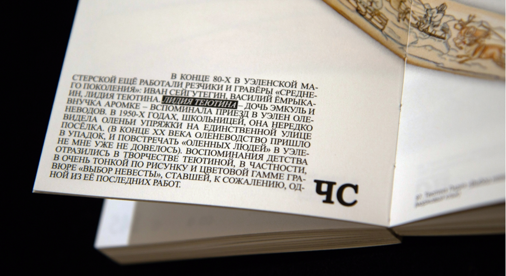
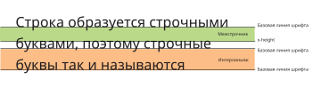
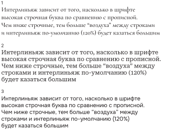
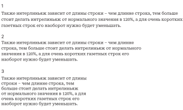
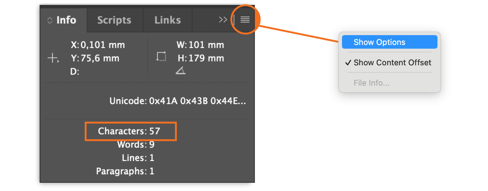
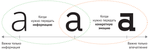
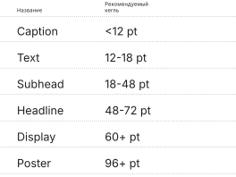

Текст
Блок основного текста — это то, с чего стоит начать дизайнить книгу, так как к нему проще всего сформулировать требования. Это отправная точка в композиции, от которой удобно выбирать дизайн для остальных элементов разворота. Чем больше текст по объему, тем важнее подобрать ему удобный для чтения шрифт, кегль и интерлиньяж, длину строки. Если в вашей книжке текст короткий, это не так принципиально. Можно дать волю фантазии и брать неудобные для чтения шрифты. В остальных случаях наша цель — сделать его непримечательным, чтобы мозг фокусировался на смысле слов, а не на их форме. Обычно для него берут так называемый “наборный” или “текстовый” шрифт, у которого нет ярких отличительных черт.

←
1
Сравнение наборного шрифта и акцидентного

←
2
Когда текст недлинный, можно смело дать волю фантазии
По классике наборный текст — это максимально «не дизайнерский», нейтральный по оформлению блок. Его стоит делать таким непримечательным по трём причинам. Во-первых, ради комфорта глаз. Чаще всего этот текст рассчитан на долгое линейное чтение. И самые комфортные шрифты для этого занятия — это стандартные, нейтральные. Глазам тяжело выдержать долгое чтение букв с необычными деталями, высокой жирностью. Поэтому для долгого чтения чаще всего берут шрифты с привычной формой букв. Во-вторых, из-за особенностей нашего внимания. Внимание читателя будет сфокусировано только на смысле текста и не будет перебиваться цепляющим дизайном. В-третьих, чтобы любые выделения в тексте были заметны. Давай посмотрим на блок текста как на текстуру. Чем она более равномерная, тем на ней заметнее любые изменения, например появление курсива. Равномерность появляется, если дизайнеру удаётся найти баланс между напечатанными символами и пустотой листа. Типографы называют этот баланс «серебром набора».
Свойства текста
- Рисунок шрифта и его размер
- Интерлиньяж
- Длина строки
- Выключка
- Деление на абзацы
Интерлиньяж
Перед тем, как говорить про интерлиньяж, запомним разницу между двумя терминами. Интерлиньяж — это расстояние между базовыми линиями строк. Межстрочный пробел — это пробел, который образуется между запечатанным пространством строк.

←
3
Интерлиньяж и межстрочник. Разница
Главная функция межстрочного пространства — отделять строки, чтобы глаз не соскальзывал на следующую строку при чтении. Слишком маленький интерлиньяж помешает закончить чтение строки, так как взгляд будет перебегать на соседние строки, а слишком большой превращает строчки в отдельные графические объекты. Текстовый блок перестает быть единым целым и рассыпается.
Как понять, что выбран правильный интерлиньяж? Распечатать и прочитать оформленный текст! Если взгляд не убегает при чтении раньше конца строчки, а при рассмотрении блока издалека он не выглядит слишком разряженным, интерлиньяж хороший. Но что делать, если не получается оценить результат на глаз?
Если вы уже сталкивались с дизайном книг, то наверняка слышали магический совет устанавливать интерлиньяж, равный 120% от размера шрифта. Это величина, которая по умолчанию установлена в программах для верстки, например в InDesign. Если шрифт равен 10 pt, то интерлиньяж будет равен 12 pt. Для шрифта с размером 12 pt — 14,4 pt и так далее. Это отношение кегля к интерлиньяжу произрастает из старой типографики, где для наборного текста использовались антиквы. Дело в том, что у среднестатистических антикв высота строчной буквы существенно меньше заглавной (менее 50% от кегельной площадки, например в шрифте «Академическая» строчные равны 38,5%). Из-за того, что высота текстовой строки образуется строчными буквами, между строками появляется большой пробел. Но существует множество шрифтов, где разница между строчной и прописной не так велика. В этом случае у нас получится следующая картинка: межстрочное пространство будет меньше, хоть интерлиньяж выставлен тот же, что в антикве. На практике оптимальный вариант интерлиньяжа колеблется между 90% и 150% от кегля. То есть выбор интерлиньяжа сильно зависит от вертикальных пропорций шрифта.

←
4
Интерлиньяж 120% в шрифтах с разной высотой строчных (при одинаковой высоте прописных)
Также интерлиньяж зависит от длины строки – чем длинне строка, тем больше стоит делать интрелиньяж от нормального значения в 120%, а для очень коротких газетных строк его наоборот нужно будет уменьшать (→рис. 133). Происходит это потому что нам очень трудно читать длинные строки текста — увеличивается риск сползания на следующую строку. Поэтому у очень длинной строчки (более 70 знаков в строке) интерлиньяж нужно делать больше 120%, чтобы их разделяло ощутимое белое пространство. Например, 150% от кегля. А для короткой (менее 55 знаков) интерлиньяж можно оставить 120% от кегля или снизить до 100%. Все зависит от шрифта: если строчные достаточно высокие относительно прописных, то 120% окажется мало.

←
5
Оптимальный интерлиньяж в зависимости от кол-ва символов в строке (кегль 8 pt)
1. 74 символа – интерлиньяж 150%
2. 54 символа – интерлиньяж 137%
3. 34 символа – интерлиньяж 120%
Еще интерлиньяж зависит от размера текста. В заголовках мы всегда уменьшаем межстрочный интервал, потому что для глаза белое пространство всегда увеличивается быстрее, чем сам текст. В мелких подписях, наоборот, стоит увеличивать интерлиняж примерно до 150% от кегля шрифта
Длина строки
Йозеф Мюллера Брокман, отец объективности и нейтральности в типографике, советует длину строки примерно в 7 слов. Это примерно 40-70 знаков. Намного правильнее и удобнее считать эту длину в символах.
- Нажать F8 или «Окно → инструменты»
- Выделить строку и посмотреть в окошко
- Если там только координаты, нужно зайти в меню окна

←
6
Просмотр количества символов в строке
Выключка по левому краю – самый универсальный и легкий способ, потому что в нем проще контролировать переносы. Кроме того она подойдет для экстремально узких колонок (менее 40 символов).
Выключка по формату – это вариант, который требует более внимательного отношения к переносам. Какие-то строки могут выйти более разряженными, а какие-то, наоборот, слишком плотными.
Как найти и выбрать шрифт
Читать или рассматривать? Первое, что нужно сделать перед началом поиска — это определиться с тем, какие задачи должен закрывать текст, набранный этим шрифтом. Мы можем читать текст и воспринимать его смысл, а можем превратить текст в дизайнерскую картинку, которая в первую очередь будет передавать яркое настроение и стиль (→рис. 89). Такую надпись будут сначала замечать, рассматривать и уже потом, возможно, читать.

←
7
Знание целей шрифта помогает определиться с его выбором
Места. Горячо советую список бесплатных хороших шрифтов, которые собрали ребята из компании Paratype. Так как их отбирали шрифтовики, можно быть уверенным в качестве. Список большой и разбит на антиквы, гротески и акцидентные шрифты. Хорошая библиотека бесплатных наборных шрифтов есть у Google Fonts, но там попадаются шрифты с плохой кириллицей. Компания Adobe имеет собственную онлайн-библиотеку со шрифтами, которую предоставляет своим подписчикам. Эти шрифты не скачиваются на компьютер, а находятся в облаке и отображаются только в программах Creative Cloud.
Ключевые слова. Иногда в названии шрифта уже заложена подсказка, для каких целей его стоит использовать. Благодаря им можно найти шрифт под определенный размер, или шрифт с особым стилем. Например, есть целый набор терминов, намекающих на то, для какого кегля был спроектирован шрифт под их названием. Если вы видите в названии слово «Display» — это шрифт, спроектированный для применения в большом кегле, например, в качестве заголовка на билборде. Носителей русского языка это название может запутать и ложно намекнуть на мониторы и веб-дизайн, но теперь мы знаем, что это всего лишь ложный друг переводчика.

←
8
Еще полезно подобрать английские прилагательные, описывающие шрифт. Ниже находятся устоявшиеся названия, по которым легко найти шрифт с нужными параметрами:
- Condensed — узкий;
- Narrow — в меру узкий. Он ближе к обычному начертанию, чем Сondensed;
- Extended — широкий;
- Rounded — скругленный;
- Slab — брусковый;
- Contrast — c бОльшим контрастом чем обычное начертание;
- Stencil — трафаретный и т.д.